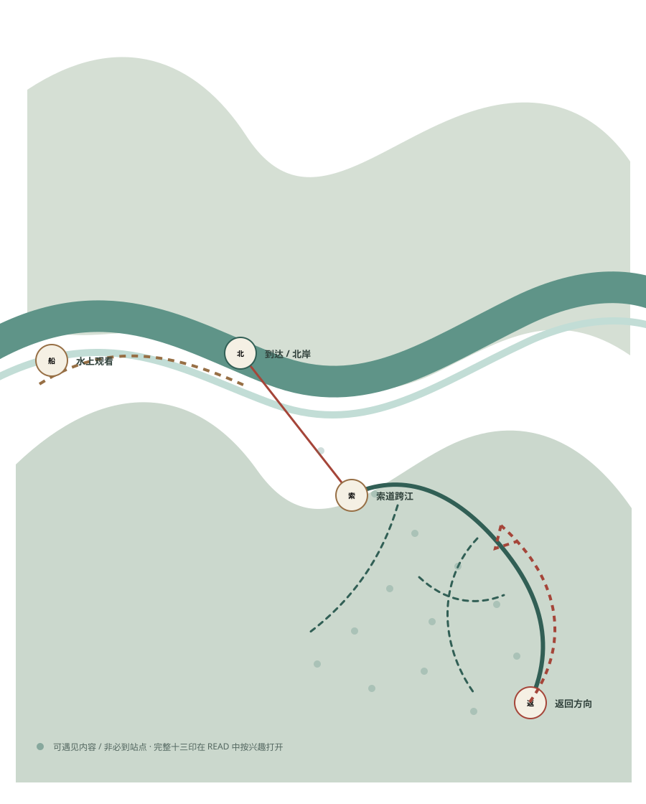
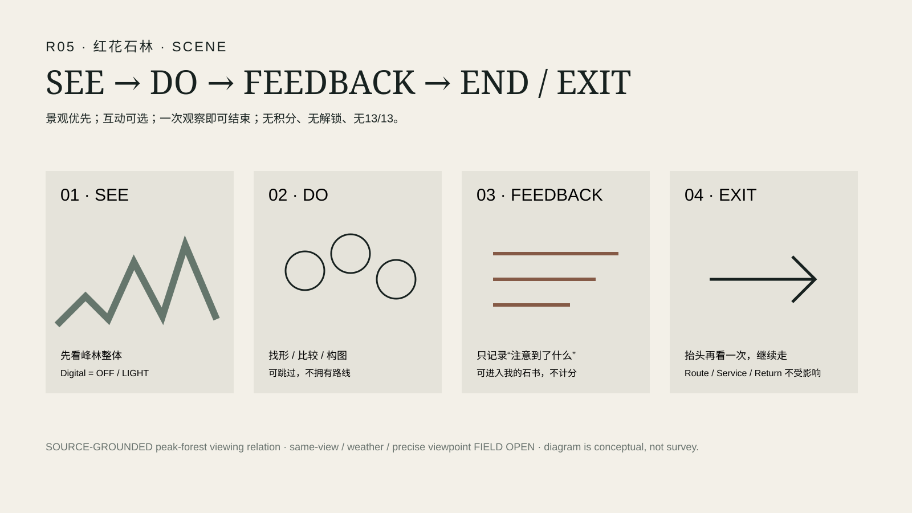
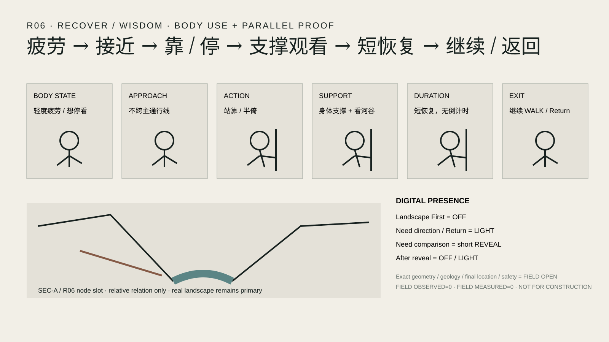

江、峰、峡谷、藤、岩壁、风与光
景观不是 App 和游戏的背景，而是第一阅读。解释必须晚于观察。
以真实清江游程为骨架，用地域文化作为内容，用探索游戏作为阅读机制，用数字产品提供可选深度，用实体与感官设计把体验落到身体，用 R06 / R13 证明空间，用文创与记忆延长旅程，最后再用技术图证明它如何成立，并让 Return 回到真实清江。
Culture 是十三印、玩法、身体感受和记忆设计的内容母体，不做文化资料分类报告。游客先看到真实清江，再遇到故事、植物、峰形、风、光、声音与地方智慧。
景观不是 App 和游戏的背景，而是第一阅读。解释必须晚于观察。
地方叙事可被听见、比较和记住，但不替代现场、史址或科学证据。
进入 MAIN 的文化内容必须回答：在哪里遇到、游客做什么、为什么此处有意义、是否需要手机。
BOAT / CABLE / WALK 与游戏风格总地图共同构成 How to Play。地图可以像开放世界，但路线、安全、关闭状态和 Return 不由任务解锁。
长距离看峡谷、倒影、整体山水与声音关系。
首先是交通和回程，其次是移动视点与两岸关系。
身体进入坡地、岩壁、植物、停留、疲劳与多分支选择。

沿用 App/Game Map v1.2 的 TODAY / ROUTE / READ / MY BOOK、Service / Return、audience depth、print/no-phone 与本机记忆。
R01 红岩嘴通过索道移动视点被阅读，不强制 UI；强景观和身体场景减少数字占用；R13 只保留必要状态和 Return。
交通、路线、状态、回程优先。
多分支探索，不需要完成任务继续。
故事、观察、十三印和轻互动按场景出现。
场景、动作、笔记、可选照片，不形成 13/13 完成率。
完整 R01–R13 必须可见，但介入深度不等权。它们是内容入口，不是路线节点。
SCENE / READ / OBSERVE / BODY / HOLD 是设计处置，不是游戏等级；可以跳过、错序，也不拥有通行主权。
PR #129 已把 R05 与 R06 从文字逻辑推进到可编辑 Scene System。这里直接消费已合并源，不重新概念化。

Landscape First；互动可跳过；一次观察即可结束；无积分、解锁、计时、路线 gate 或 13/13。当前抽象峰形仍需替换为 source-grounded Qingjiang / Honghua first-read 后才可称 MAIN pixel。

数字在观看/恢复时 OFF，需要比较时短暂 Reveal，之后回到 OFF/LIGHT；身体使用与 SEC-A/R06 node 证明被组织到同一游客动作里。
SEE 岩壁与光 → DO 放慢/通过/判断 → RESPONSE PLAY OFF / Return ON → EXIT 继续或返回。R13 不通过挑战强度区分人群，也不把狭窄空间变成高注意力游戏。
PR #129 已证明 R05/R06 的四类深度共享同一 Scene 与同一真实路线。Audience Depth 因此继续作为独立 MAIN 层，而不是退回 App filter 或 persona 表格。
所有人面对同一空间；变化的是内容密度、互动深度、停留时间与退出阈值。
简单观察与共同发现；不要求完成全部内容。
可进入场景互动与 My Book，但真实路线不变成任务链。
在已经看见以后进入更多解释，解释永远晚于景观。
R06 当前系统已把 Rest / Service / Return 放在这一类游客的第一读。
Physical / Sensory 不缩成产品清单。它回答身体怎么走、靠、停、看、听、触、写，以及实体机制在真实条件下如何退出。
经过 → 短暂反馈 → 淡出；白天、故障、维护时 OFF；当前仍 HOLD。
以真实风条件决定是否成立，不假定固定选址。
声音不持续占用注意力，景观强时可退场。
实体接触与纸本体验同时支持无手机路径。


R06 / R13 是两个空间高潮，不承担整个项目叙事：一个打开，一个收窄；一个允许停留与理解，一个要求内容撤退并提高 Return 优先级。

真实河谷应该是第一阅读。PR #129 的 Scene System 现作为行为层；最终 proof 仍需替换成当前 authoritative SEC-A + R06 node。

岩壁、光、身体通过与 Return 优先；高注意力玩法关闭，实际净宽、湿滑、照度、拥堵仍 FIELD OPEN。
Memory / IP 是独立设计层，不与 Return 合并。数字记录、纸本旅记、个人地图、图形语言与文化产品共同延长旅程，但不以 13/13 定义价值。

清江一线、清江雾气、红花峰崽等继续区分为 IP / graphic / product 候选；不把所有视觉语言都叫 IP。

Technical Proof 是独立、短而强的 MAIN 章节，同时允许前面各设计对象有局部 attached proof。这里只精选最能说明路线、尺度、空间与构造关系的资产。
证明多分支游程、路线和空间关系；不把整包研究图上墙。
证明人体尺度与节点关系；停止无限新增尺寸和节点。
模型系统里最有职业价值的视图；模型只证明空间，不替代真实清江。
必须与 R06 landscape image 成对阅读；若不比 C23 线稿更清楚则不进入 MAIN。
Return 单独作为最终章节。游客重新认出江、峰、岸、索道和来路；数字可以重新出现支持回程，但最终视觉不再回到 App、技术图或文创，而是回到真实清江——同一条河，只是游客已经学会了另一种看法。